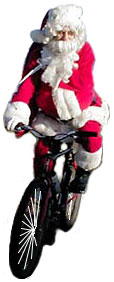

Volume 7 Issue 6 - November/December 2002
In This Issue
SIR 2003 Brevet Schedule
2003 Winter Ride Series V
Planning Ahead for PBP
Road Snippets
PBP is coming up!
Paris-Brest-Paris is August 18-22, 2003 and this year's brevvets will get us all ready. To enter PBP 2003, the rider must complete one full Brevet series (200k, 300k, 400k, and 600k brevets) in the same year as PBP. Per ACP mandate, all USA entrants must be members of Randonneurs USA and submit their entry via RUSA. RUSA members can enter PBP by sending the PBP entry form, payment and all other required documents to RUSA before July 1 (listing all successfully completed revets in sequence). RUSA collects and collates the forms, ensures they are correct, puts them in alphabetical order, sorts them into categories by start time and sends the forms to the ACP in France along with one large payment in Euros. Riders receive their PBP registration packet of information directly from the ACP around August 1. Get more info here: http://www.rusa.org/pbp2003.html
SIR Email List
Remember that all SIR info is distributed through the SIR email list on a regular basis, and the traffic is low, so sign up and don't miss out! To subscribe go to http://www.phred.org/mailman/listinfo/sir.
SIR Members only: SIR roster available upon request. If you would like a copy of the roster sent to you, please contact Anne Marie McSweeney at membership2004@seattlerandonneur.org or 425-868-6796.
| Date | Distance | Organizer | Route |
|---|---|---|---|
| Mar 1 | 100 km Populaire | Mark Thomas (or volunteer!) | |
| Mar 15 | 200 km | Greg Cox | 2002 route with slight modifications. |
| April 5 | 300 km | Ken Carter | |
| April 18-19 | Flèche Northwest | Peter McKay | Semi-ah-moo finish. |
| May 3 | 400 km | Bill Dussler | |
| May 24-35 | 600 km | Jon Muellner | North Olympic Peninsula. |
| June 13-14 | 600 km | Mark Thomas | |
| June 13-17 | 1000 km | Mark Thomas | |
| June 15 | 400 km | Mark Thomas | |
| July 4 | 300 km | Terry Zmrhal | |
| July 4-5 | 600 km | Terry Zmrhal | |
| July 5 | 300 km | Terry Zmrhal | |
| July 6 | 200 km | Terry Zmrhal | |
| July 26 | 300 km | Paul Johnson/Dave Read/Brian List | |
| July 27 | 200 km | Paul Johnson/Dave Read/Brian List | |
| Sept 13 | 100 km Populaire | Jan Heine | |
| Sept 20 | 200 km | Wayne Methner | |
| Sept 26-28 | 1000 km | Mark Thomas (or volunteer!) |
Once again, Terry Zmryal going to be running a Winter Rides Series. Pretty much the full details are on the SIR site and in the Cascade newsletter. It will be run a lot like last year. The first ride will be the weekend of January 11th and will lead up to the SIR 100K on March 1st and the SIR 200K on March 15th with distances varying from about 35 miles to 85 miles, always with shortcuts available. These rides will be a little hillier than in the past as preparation for Paris-Brest-Paris (PBP), but still very doable.
All distribution of information is via e-mail. If you'd like to receive weekly mails about the ride for the week contact Terry at terryz@microsoft.com to get on the list and feel free to forward this info to anyone else who may be interested.
Date Time Approx Dist Route 1/11 2 hrs 35m/55km Marymoor, Carnation, Union Hill, Marymoor 1/18 2.5 hrs 40m/65km Issaquah to Black Diamond Bakery and back 1/25 3.5 hrs 50m/80km Camano Island loop 2/1 4.5 hrs 65m/100km Issaquah to Enumclaw (extension of route on 1/18) 2/8 3.5 hrs 50m/80km Snohomish, Granite Falls, Lake Roesiger, Monroe, Snohomish 2/15 4.5 hrs 70m/100km Kitsap Peninsula from Kingston 2/22 6 hrs 85m/130km LaConner to Bellingham - a little flatter route, but very nice 3/1 4.5 hrs 65m/100km SIR 100km Populaire 3/8 Currently nothing planned 3/15 125m/200km SIR 200km Brevet
From the RUSA web site
- Distance: 1200k (750 miles)
- Time Limit: 90 hours
- Rider Check in: August 17, 2003
- Bike Inspection: August 17, 2003
- Start Date: August 18, 2003
- Finish Date: August 22, 2003
- Award Ceremony: August 22, 2003
- Start Times:
- Monday August 18 8:00pm - 80 hour group
- Monday August 18 10:00pm - 90 hour group
- Tuesday August 19 5:00am - 84 hour group
- Qualification Criteria: To enter PBP 2003, the rider must complete one full Brevet series (200k, 300k, 400k, and 600k brevets) in the same year as PBP.
- Brevets done the year before will not count toward PBP qualification. The brevets should be ridden in sequence between March 1 and June 15, 2003. Per ACP mandate, the rider must have a RUSA membership number beginning with the 200k.
- Entry Form: The official PBP 2003 entry form will be sent to all RUSA members in May of 2003.
- Entry Policy: Entry forms are accepted from Randonneurs Mondiaux member organizations only.
- The ACP will not accept individual entries. Per ACP mandate, all USA entrants must be members of Randonneurs USA and submit their entry via RUSA. RUSA members can enter PBP by sending the PBP entry form, payment and all other required documents to RUSA before July 1. RUSA collects and collates the forms, ensures they are correct, puts them in alphabetical order, sorts them into categories by start time and sends the forms to the ACP in France along with one large payment in Euros. Riders receive their PBP registration packet of information directly from the ACP around August 1.
- Entry Period: Entry forms are accepted between June 1 and July 1, 2003. No early entries are accepted. No late entries are accepted.
- Field Limit: 3,500 riders
- Documents Required:
- Completed PBP entry form including Brevet certification numbers
- Four self-adhesive self-addressed mailing address labels
- Letter from physician - stating that rider is in good health
- 2 Passport-size photos of rider
- Proof of medical insurance
- Payment of entry fee: checks only; no credit cards
- Age Limit: riders must be 18 years of age or older
- Entry Fee: $125.00 (approx)
- Start/Finish Area: St. Quentin en Yvelines, (near Versailles) France
- Nearest Airport to start/finish area: Orly-Sud
- For further information: Order the RUSA PBP Yearbook. See the Souvenir Items link.
Note: All participants are required to make their own travel arrangements for PBP. RUSA is not a travel agency and does not handle air, hotel or rental car arrangements for riders. Contact a travel agent to make your reservations.
Road Snippets
This is going to be a busy year for SIR and all randonneurs around the world as we prepare for PBP. Because of all the brevets being run it would be great for SIR members to help out the brevet organizers. There's lots to do and any help provided will help make it all go smoother!Fenders...everyone must have them...there is no penalty and your friends will still be friends when the ride is over. Some say that they weigh too much, but there are far better places to save weight (wheels, body fat, wet chamiox from having no fenders). Some say they can't fit them to their frame, but that's an illusion (there are no bikes that some form of fenders can't fit. If I can get a pair on my Match Paramount, it can be done!) Some say it causes an aerodynamic disadvantage; well, if that's the case shouldn't you be riding in Europe with USPS and getting paid?? This is the time of year (now through July) when fenders are your best defense in keeping dry, happy and in great spirits as your SIR friendships deepen.
Mark Thomas, Anne Marie McSweeny, Jon Muellner, Bill Dussler, Terry Zmrhal, Greg Cox & Wayne Methner
Membership Fee:
$8.00 - full membership w/e-mail newsletter or
$15.00 - full membership w/printed newsletter.
Membership Address:
c/o Anne Marie McSweeny, 19167 NE 43rd Court
Sammamish, WA 98074, 425-868-6796